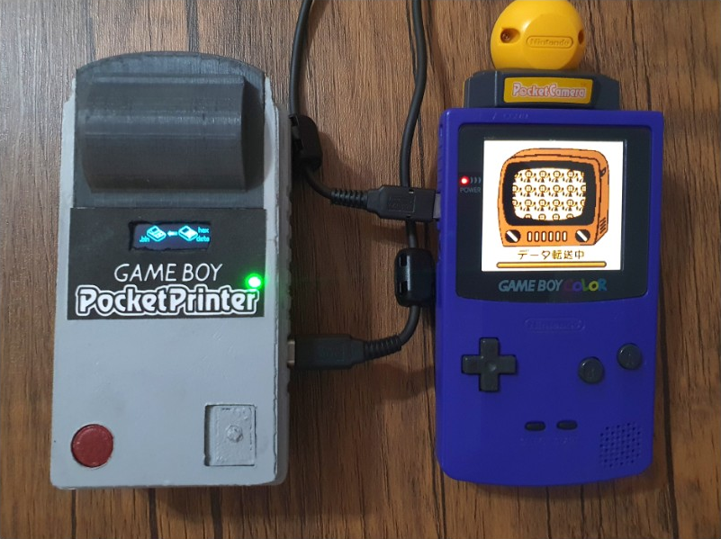
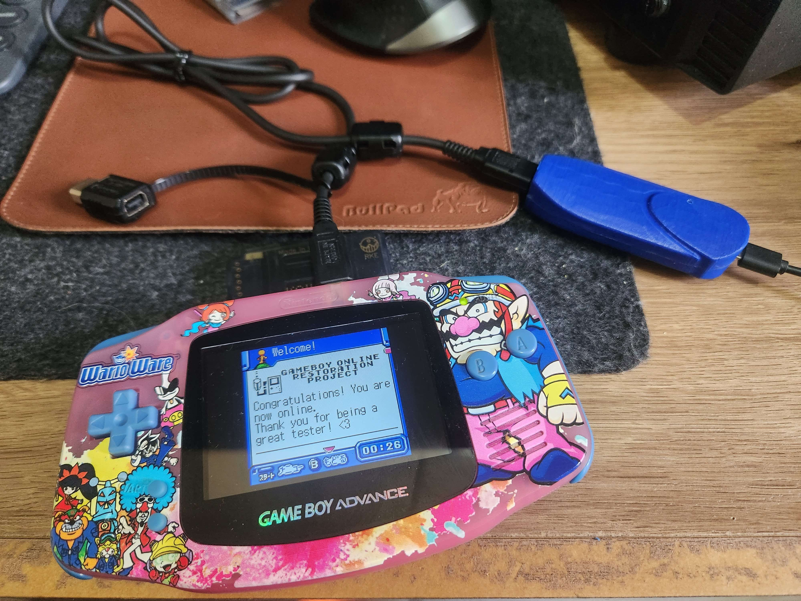

<tr>
	<td valign="top" width="341">
	<!-- MSCellType="ContentBody" -->
	<!-- Sobre -->
	<table border="1" width="100%">
		<tr>
			<td bgcolor="#3366cc">
			<p align="center"><b><font size="7" color="#FFFFFF">
			Meus Projetos</font></b></p>
			</td>
		</tr>
		<tr>
			<td background="/imagens/recursos/bgwhite.png">
				<p align="center"><font size="4"> Esse espaço é uma galeria dos meus projetos que invendo no tempo livre.
					Todos eles faço questão que disponibilizar no Github, pelo motivo de permitir que qualquer um possa melhora-lo e esteja
					sempre acessível a comunidade!
				</font></p>
				<p align="center"><font size="4"> Fiquem a vontade para clona-los, melhoraros ou só monta-los para uso pessoal mesmo!
				</font></p>
                <div align="center">
					<table border="1" width="50%">
						<!-- Imagem -->
						<tr>
							<td>
								<p align="center">
									
								</p>
							</td>
							<td>
								<p align="center">
									
								</p>
							</td>
						</tr>					
						<!-- Nome do projeto -->
						<tr>
							<td>
								<p align="center">
									<a href="https://github.com/zenaror/NeoGB-Printer/" target="_blank"><b><font size="5">NeoGB Printer</font></b></a>
								</p>
							</td>
							<td>
								<p align="center">
									<a href="https://github.com/zenaror/PicoAdapterGB/" target="_blank"><b><font size="5">Pico Adapter GB</font></b></a>
								</p>
							</td>
						</tr>
						<!-- Descrições -->
						<tr>
							<td>
								O NeoGB Printer é um emulador open-source da Game Boy Printer, que funciona de forma autônoma usando um cartão SD. 
								É fácil e barato de montar (menos de R$100), não exige soldagem complexa e é programado pelo Arduino IDE. 
								Ele "imprime" e salva as imagens diretamente de jogos compatíveis e converte os dados para BMP/PNG no cartão SD. 
								Também possui um modo servidor web simples e intuitivo.
							</td>
							<td>
								O Mobile Adapter GB é a primeira versão autônoma do adaptador original de Game Boy Color/Advance, baseada na Libmobile do REON Team. 
								Ele funciona sem precisar de software adicional - basta alimentá-lo com um cabo USB (via power bank, carregador, celular com OTG
								ou bateria) e fazer uma configuração inicial simples por um Monitor Serial com um PC ou smartphone. 
								Também pode se conectar a servidores personalizados baseados no projeto REON, assim que lançados.
							</td>
						</tr>
					</table>
					<br />
					<a href="https://github.com/zenaror/" target="_blank"></a>
				</div>
			</td>
		</tr>
	</table>	
	</td>
</tr>